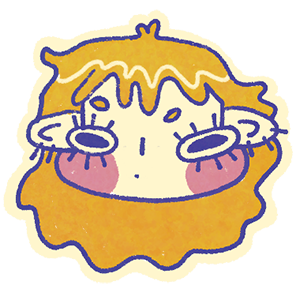
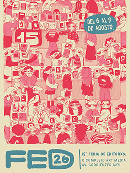
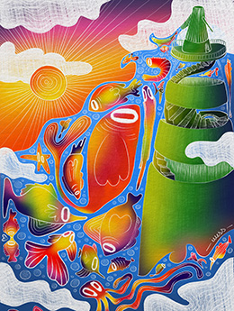
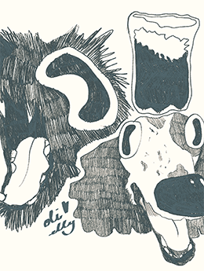
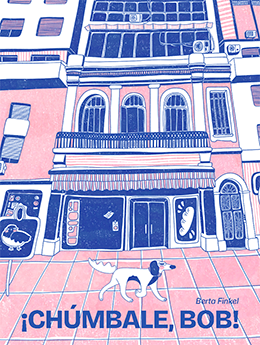
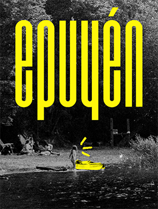
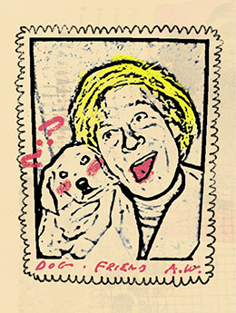

¡HOLA, SOY CATE!
Estudiante de Diseño y Comunicación visual Amante de la ilustración, el diseño editorial y de los perritos.
/ Perfil.
Diseñadora e ilustradora orientada a la creación de identidad visual, proyectos editoriales y comunicación de marca. Mi enfoque de trabajo fusiona la exploración analógica con herramientas digitales, abarcando desde la ilustración y la diagramación hasta la bajada a piezas reales como afiches, merchandising y publicaciones. Busco desarrollar sistemas gráficos coherentes y versátiles que destaquen por su rigor conceptual, su cuidado por la tipografía y un estilo visual propio.
/ Formación.
Licenciatura en Diseño y Comunicación visual
Universidad Nacional de Lanús
2023 - en curso
/ Experiencia.
Trabajos independientes / encargos
Desarrollo de ilustraciones, identidad de marca, piezas publicitarias y stickers comerciales para clientes particulares.
2025 - en curso
Proyectos académicos de diseño
Desarrollo integral de proyectos de diseño, incluyendo identidad visual, diseño editorial, ilustración y piezas de comunicación.
2023 - en curso
/ Áreas de diseño.
- Diseño editorial
- Ilustración
- identidad visual
/ Habilidades.
- Organización y gestión
- Responsabilidad
- Trabajo en equipo
- Autonomía
- Atención al detalle
/ Programas.
Adobe Illustrator
Adobe Photoshop
Adobe Indesign
/ Idiomas.
- Español
- Inglés
/ Galería.
ILUSTRACIÓN

FED 2026
Participación en el concurso para el afiche de Feria de Editorxs, 2026.

IVESS 2025
Participación en la convocatoria de ilustración por la marca Ivess, en el año 2025.

OLI Y ELLY ❤
Ilustración hecha por amor al arte en el verano (enero-marzo) de 2026, creo.
DISEÑO EDITORIAL

¡CHÚMBALE, BOB!
Rediseño editorial y de ilustración de un libro robado de la biblioteca de mi abuela.

EPUYÉN
Fanzine que hice a modo de souvenir de un viaje con unos amigos al sur de Argentina.

WARHOL
El trabajo de todo un cuatrimestre para la materia Letra Experimental en la carrera de DYCV en UNLa.